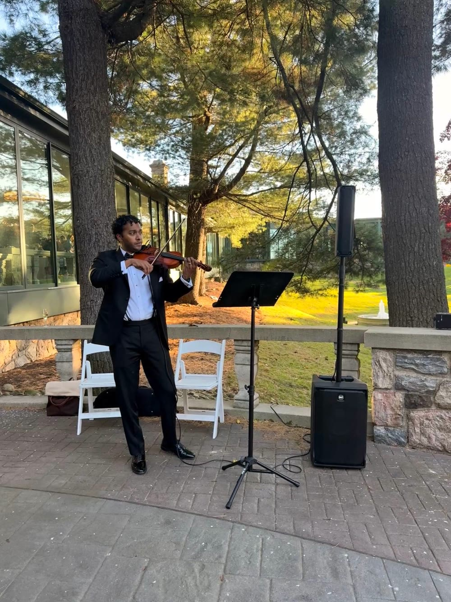
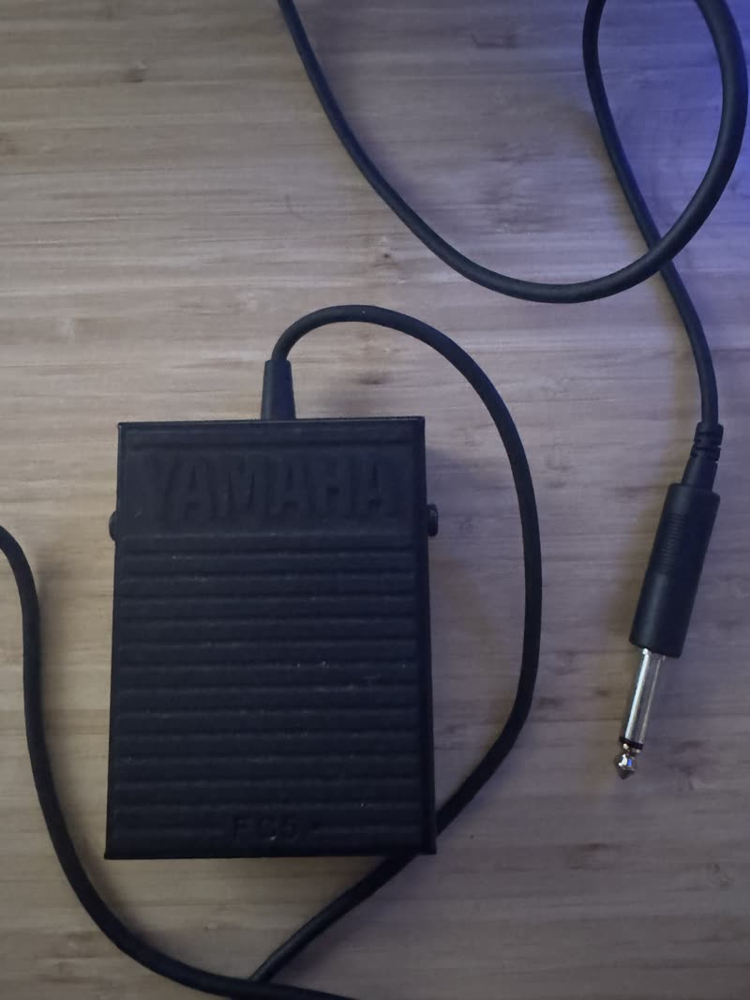
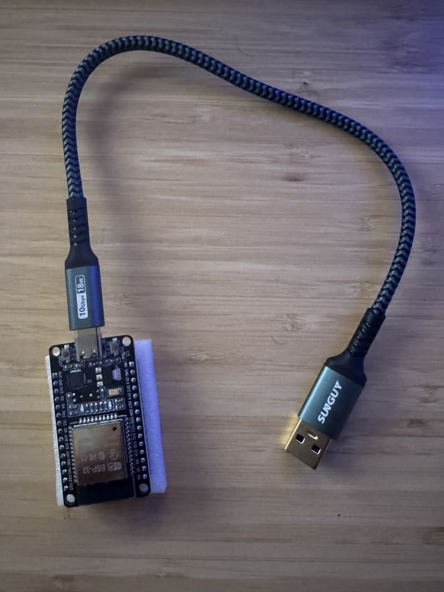
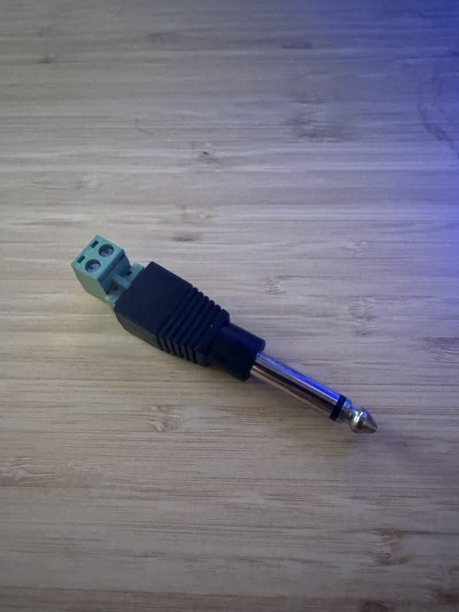
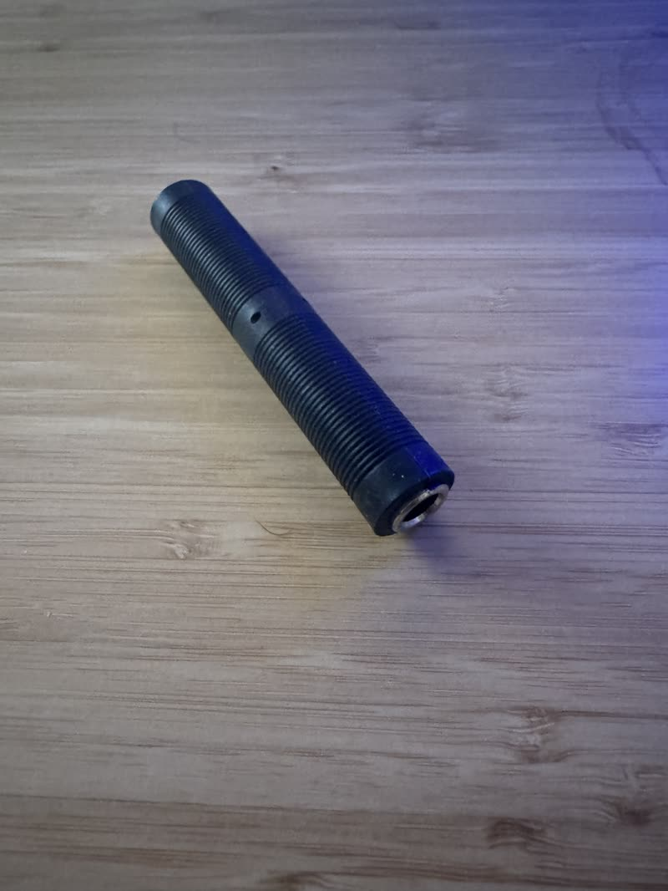
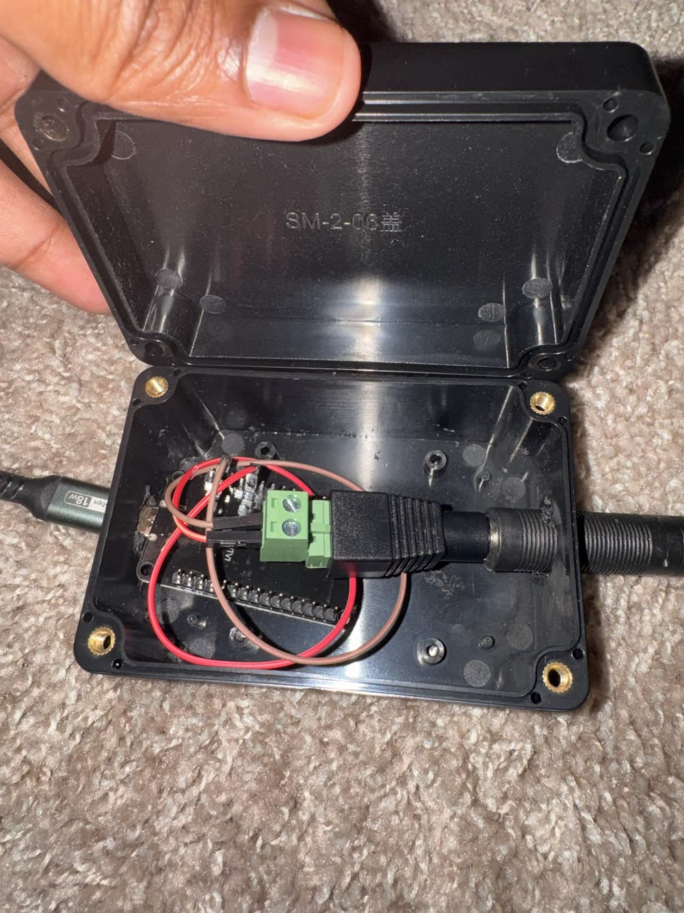
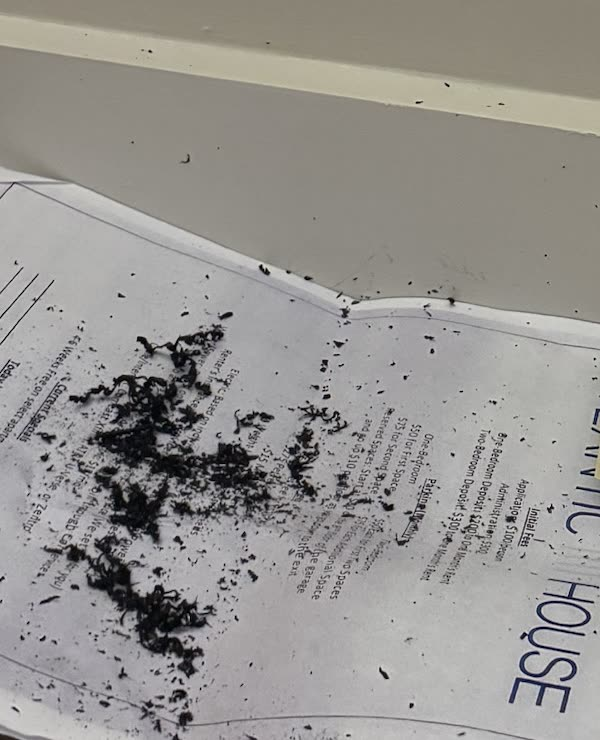

Can Claude Save My Violin Gigging?
I used Claude to program a foot pedal that lets me fade in and out of songs and turn my sheet music, hands-free.
November 2026
I love playing violin, but the hardest part about performing is easily the logistics of it all. Strings can snap, the instrument gives me attitude outside (it goes out of tune), and flying with it requires begging and pleading with flight attendants and other passengers alike not to put stuff on top of my violin in the overhead bin.
Far and away the most complicated thing when performing, however, is judging how you'll sound and what acoustics you'll need. If you're playing violin in a symphony, you're set. Show up to your nice, air-conditioned, state-of-the-art concert hall, tune up, run through some etudes, and you're ready to rock and roll. Gigging, on the other hand, is a completely different beast.
Over the years, friends and family have often asked me to play at their engagements, weddings, and other intimate events. Most recently, I was asked to play at my buddy's outdoor wedding in upstate New York at the tail end of fall. Although I have spent 150 words complaining about how annoying it is to play the violin, let me be clear that I still love doing these types of things. Of course I said yes, and I set to work thinking about the logistics.
Since they asked me to play by myself, I had to think through my options. I personally don't love the way the violin sounds on its own. Maybe put a different way, it is extremely difficult to make the violin sound "full," and let me tell you, Pachelbel's Canon (a wedding staple) does not lend itself well to just one violin. A canon, by its nature, has several instruments play the same melody, each one coming in a couple of bars after the last. When I am the only person asked to play, I oftentimes play with a backing track.
Here's the problem
Picture this. I'm performing at a beautiful venue overlooking the Hudson Valley. The piano accompaniment to Jesu, Joy of Man's Desiring starts, and I begin to liltingly float over it. After a few minutes, I look over at the wedding coordinator, and she's done sending in the groomsmen and is starting to send the parents. Oh no, I was supposed to switch pieces at this point, but I still have 15 seconds left on my track. What am I supposed to do?

In my case, thank goodness I had a friendly helper named Colin (the lead singer of the wedding band playing that evening), whom I voluntold to help me cue the next track. But poor Colin had to manually fade in and out of songs on my iPhone.
And as I begin the ill-fated Pachelbel's Canon, I turn to see the bride's 15 bridesmaids (no exaggeration) sauntering down the aisle, and by bridesmaid 7, I'm running out of music. I can't turn my sheet music because (A) it's windy and my one page is taped down, and (B) I didn't expect to be 2.5 minutes deep into it and don't want to start sight-reading a part I haven't practiced.
Like most instrumentalists, I can do very little (ahem, nothing) when both of my hands are occupied. It is quite stressful in the moment.
Ultimately, the wedding went great thanks to Colin (and my wife, who ran to get tape during the pre-ceremony). But on the flight home that Sunday, I started thinking: could I, with my favorite buddy Claude, fix this problem?
Building the pedal
On the flight, we strategized. I had used pedals before (to add reverb, loop my playing, and so on), so I was comfortable using my feet to take action while playing violin. What if I programmed a piano sustain pedal to play and pause tracks, fade out of the current song and into the next one, and turn a page of virtual sheet music?
The pedal only has one action, so everything comes down to how I press it. One tap could turn the page. Two taps could pause or play the track, with a quick fade so nothing cuts off. Three taps could go back a page, in case I tap by accident. And holding it down could fade out the current song, fade in the next one, and pull up its sheet music.
Claude and I talked about some pedals that already exist off the shelf. There are pedals that advance tracks or turn pages, but I couldn't find one that does both. The bigger problem was flexibility. If I decided I wanted to switch what each pedal action meant, I might not be able to with an off-the-shelf pedal.
Claude put together a shopping list ($45 all in), and the following weekend, when everything arrived, we got to work. Claude would build a web app that I could upload my mp3 backing tracks to, along with my sheet music when relevant, and then walk me through putting all of the hardware together. With an ESP32 board (a $9 microcontroller), a Yamaha sustain pedal I already owned, a couple of audio adapters, some jumper wires, and a plastic project box, it took about 90 minutes for Claude to load the firmware onto my board, help me troubleshoot one piece that was faulty out of the box, and wire up a Bluetooth pedal that I could use at my next gig.




To be clear, I am NOT handy at all. As evidence, I took an additional 45 minutes to drill holes in this project box with a power drill (at one point, I had my grill lighter out?). But otherwise, it was surprisingly easy.


Was it worth it?
Now you're probably thinking, was this worth all the trouble? When I almost drilled my hand off (which would have been the end of my violin-playing days...), I was thinking that too. But as it came together and I started testing out the pedal, I thought about how stressed I was before the ceremony and how nervous Colin was trying to help me. This was an absolute game changer.
And because I built it, I can change what it does. I often just spend time talking to my AI tools of choice (Claude, Muse, Codex), so what if one tap pulled up Claude and started dictation mode, while two taps went to Muse?
It's funny, because a lot of people in the creative arts community are actively pushing against AI, but this was such a useful use case, and I'm sure others would love to build something like it themselves. I'm sure I've come up with this idea before in my 25 years of playing violin, but I never had the tools or the capability to do anything about it. This time, I had an idea, and because I'm a subject matter expert on playing the violin, I knew what questions to ask and was able to make it happen.
The point is, for less money than I thought and with less EFFORT than I had imagined, Claude and I made something quite interesting that I am PUMPED about using in the future. I know the personal-software thesis is no longer in vogue, but as models get stronger, the bottleneck becomes our own physical limitations (in my case, my drilling abilities). Maybe in the future I'll have a robot that drills things for me, to much more precise specifications (please, no one closely examine the irregularly shaped holes in my project box). I might be slightly wary of a robot wielding a power drill, but hey, that feels like a tomorrow problem.